Classic Models SQL Database Queries
Background
Aim: Use SQL as I would in my current company, to assist different stakeholders,
pointing out trends and offer insights to align with company goals.
Technology
I will be using MySQL Workbench because once you learn it,
you can master any relational DB from any company worldwide.
Dataset
To get this DB up and running please click on the following link : https://www.mysqltutorial.org/mysql-sample-database.aspx
It is a small company that manufacures miniatures of classic and vintage cars, motorcycles, trucks and buses, planes and ships.
It is a global company that sells worldwide, date records are from 2003 to 2005. Fictional company anyway :).
Classic Models ER Diagram
After creating the DB we have eight tables that look like this:
Scenarios
Scenario 1:
First, get to know a bit the database, we are going to get all rows for each of the tables.
Eight tables:
Displaying records 1 - 8.
Scenario 2:
Top customers by revenue:
Great insights for our sales team, top customers by revenue, last order date.
Send promotions based on last order date and low sales customers.
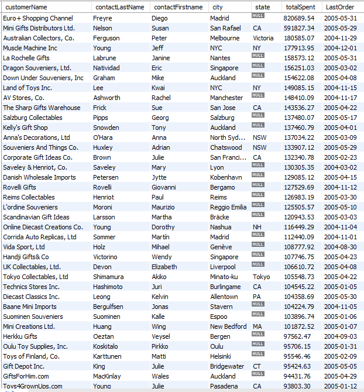
Displaying records 1 - 38 from 98.
Scenario 3:
Top sales rep performer.
Now the sales manager can set up a bonus system.
Sales colleagues will be happy to be rewarded for all hard work.
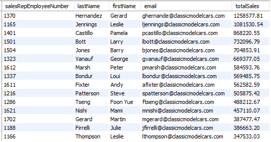
Displaying records 1 - 15.
Scenario 4:
Which office is selling the most?
Paris is the best and Tokyo needs some attention.
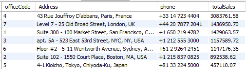
Displaying records 1 - 7.
Scenario 5:
The CEO is asking how to give discounts to customers:
Discounts will be offered to clients buying more than 35 units per year.
It will depend on sales volume obviously.
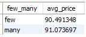
Displaying records 1 - 2.
Scenario 6:
Which month has the most total items ordered?:

Before Christmas our customers stock up the warehouse.
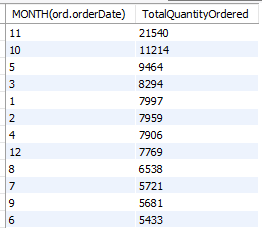
Displaying records 1 - 12.
Scenario 7:
Orders per year:
2004 was our year in terms of orders.
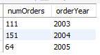
Displaying records 1 - 3.
Scenario 8:
Orders per month since the company was opened:
November shows that our busiest period is before Christmas, makes sense for a toy company.
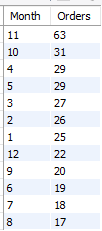
Displaying records 1 - 12.
Scenario 9:
Yearly revenue:
Our best year was 2004, we should take this year as an example and keep it up!!
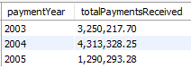
Displaying records 1 - 3.
Scenario 10:
Total sales per product line:
We can try to increase revenue for "trains" and "ships".
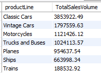
Displaying records 1 - 7.
Scenario 11:
Stock by product line:
Similar ranking as figure shown above, we are doing great in terms of stocking and inventory.
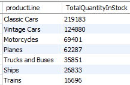
Displaying records 1 - 7.
Scenario 12:
Create a ranking of products by product line:
The login behind this query is for e.g., "Classic Cars model S18_3232" ranks first followed by "S24_3856", and so on.
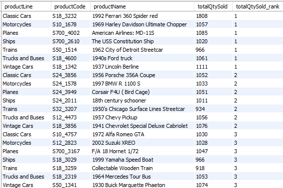
Displaying records 1 - 21 from 109.
Scenario 13:
Product by revenue and quantity sold:
Most popular item is "1992 Ferrari 360 Spider red".
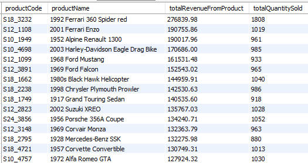
Displaying records 1 - 15 from 109.
Scenario 14:
Product by stock:
"2002 Suzuki XREO" has the highest quantity in stock. This model is also 10th in total revenue. It may be benefitial
to look for high stocked items with low revenue, maybe it is a good moment to offer discounts and lower stocks.
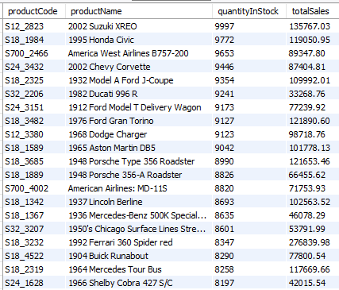
Displaying records 1 - 20 from 109.
Scenario 15:
We want to find out what percentatge of models hit 80% of total sales volume:
We can see that cumulative distribution is balanced, looking at this ranking we hit 80%
of sales at product 88 "S32_3207 1950's Chicago Surface Lines Streetcar" from a total of 109.
As a final thought, the company is balanced and well diversified.
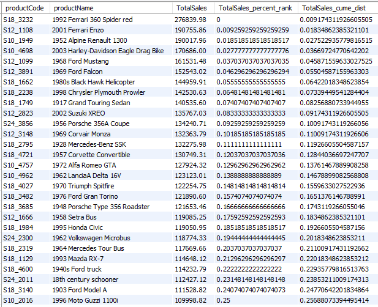
Displaying records 1 - 28 from 109.
Notes:
I hope you have enjoyed going through all these samples, I know you cannot copy the sql code from the images for that I leave you a link to access to all sql code : scenarios.sql.